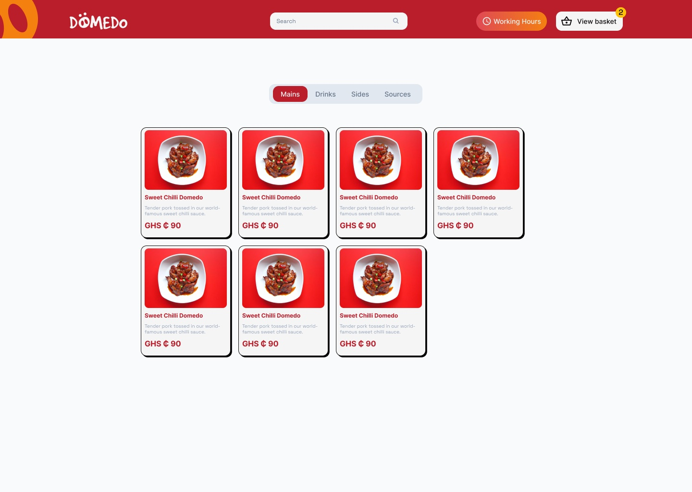
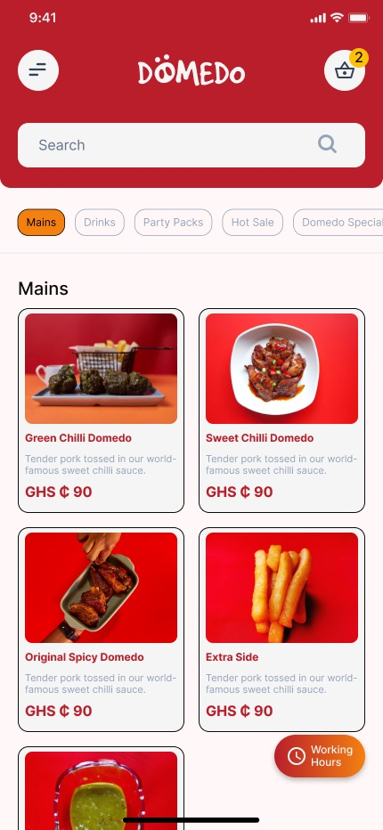
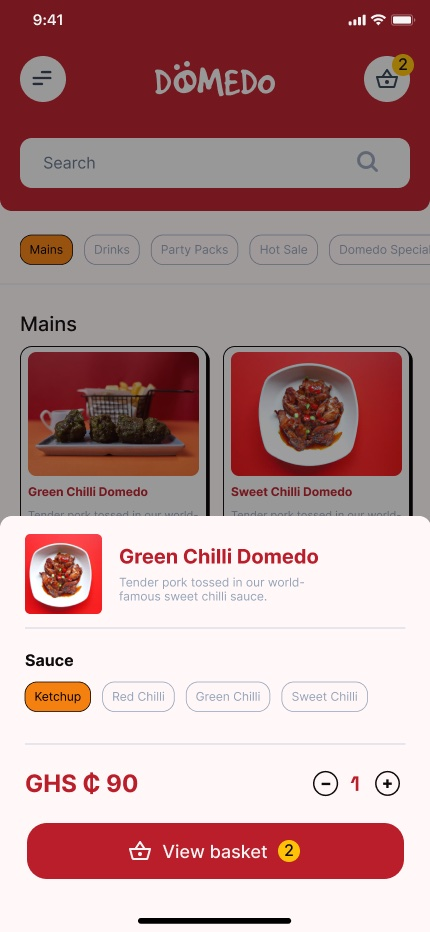
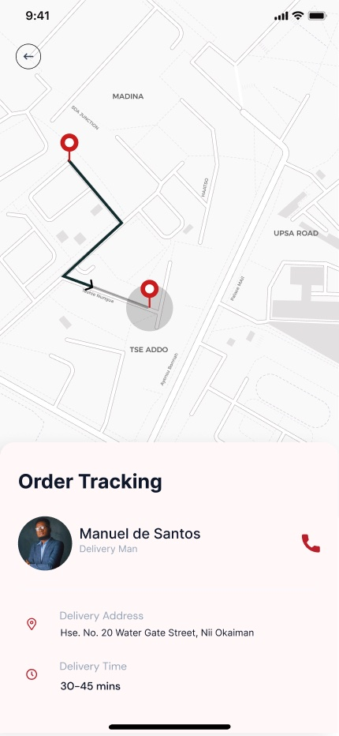
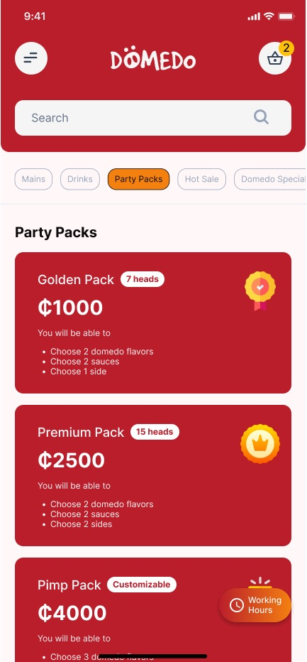
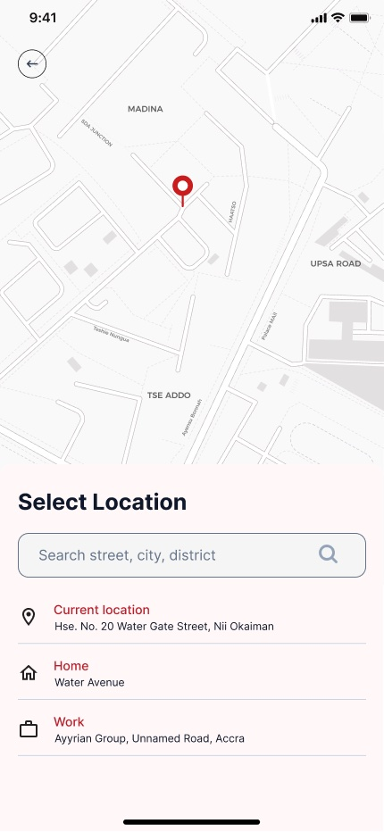
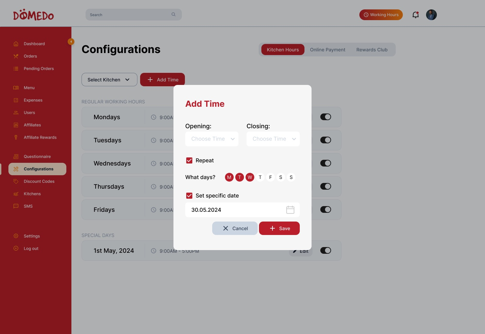

Domedo
Domedo is a restaurant in Accra, Ghana, and I was the UI designer on its food ordering platform from March to August 2024. I designed the screens for the customer mobile app, the customer website, and the admin dashboard. The product is now live, built by the development team from my designs. Customers browse the menu, choose a sauce, check out and follow their delivery, while staff manage orders, the menu, kitchens, working hours, discount codes, affiliates and a rewards club.
View in figma (opens in a new tab)Case Study05/05
From cravings to your doorstep.
01
THE PROBLEM
Domedo needed an app that lets customers order food straight from the restaurant, and customers wanted to know exactly where their delivery was instead of guessing when it would arrive.
02
THE CONSTRAINT
Live delivery updates were largely a development challenge, and the interface could not shorten the real wait. The design had to change how the wait felt instead.
03
THE APPROACH
I designed for perceived speed, following the Doherty Threshold: keep the interface responding instantly so people stay engaged. Blurred placeholders appear while food photos load, and order tracking shows how much time is left, so customers can anticipate their delivery rather than wonder about it.
CUSTOMER WEBSITE

SELECTED MOBILE SCREENS01/02
Swipe to see more screens →



MORE SCREENS


SELECTED WEB SCREENS02/02

REFLECTION
Useful and beautiful.
People adopt software when it is both pleasing to use and solves a real problem they have. Domedo showed me that one without the other is not enough: the app had to look good and make waiting for food feel shorter.